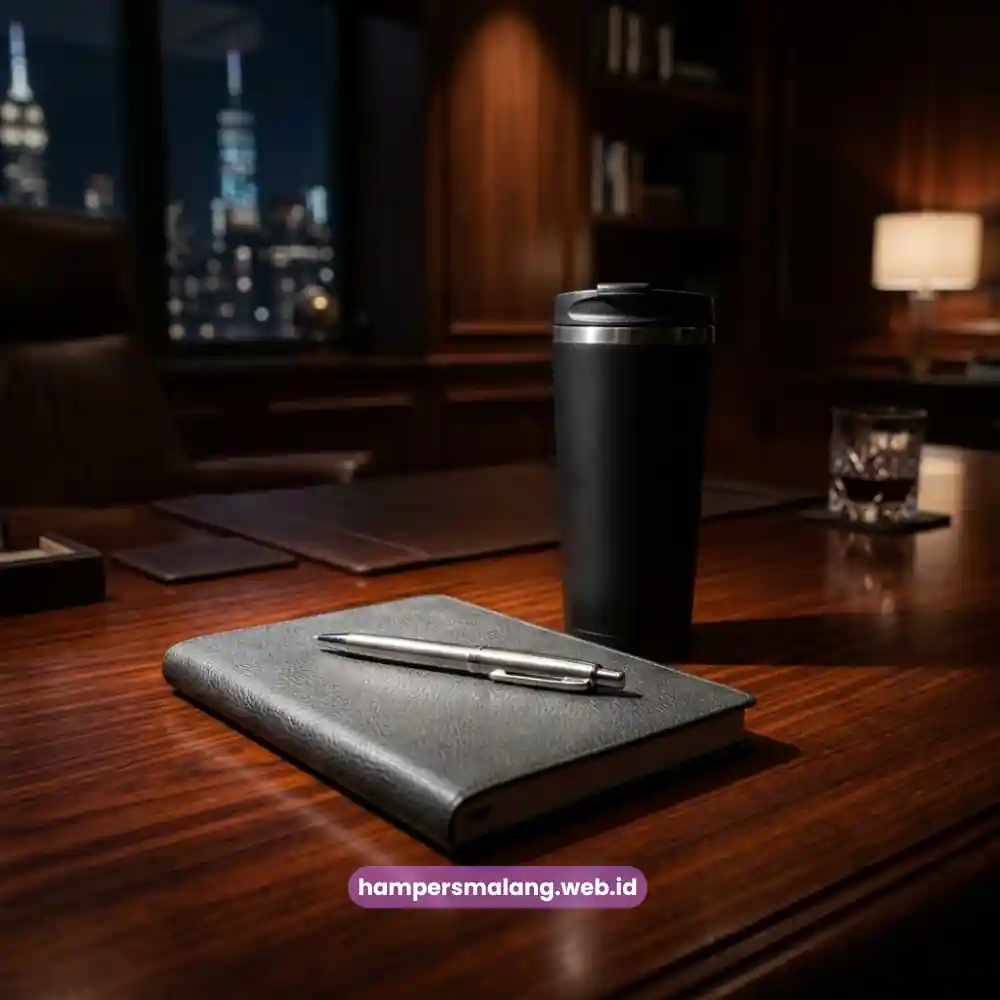

Welcome kit karyawan adalah paket sambutan berisi merchandise dan informasi penting.
Paket ini diberikan perusahaan kepada karyawan baru pada hari pertama bekerja.
Welcome kit menjadi bagian penting dari proses onboarding karyawan baru.
Isi welcome kit umumnya mencakup alat tulis branding, merchandise fungsional, dan dokumen orientasi.
Biaya welcome kit bervariasi tergantung jumlah item dan tingkat personalisasi.
Personalisasi nama dan logo membuat welcome kit terasa lebih berkesan.
Apa Itu Welcome Kit Karyawan?
Welcome kit karyawan adalah kumpulan barang dan informasi yang disiapkan perusahaan untuk menyambut karyawan baru.
Paket ini biasanya diserahkan pada hari pertama karyawan baru masuk kerja.
Welcome kit menjadi bagian dari proses onboarding untuk memperkenalkan karyawan pada lingkungan kerja dan nilai perusahaan.
Paket ini juga memberikan perlengkapan dasar yang dibutuhkan karyawan untuk mulai bekerja.
Welcome kit biasanya disiapkan oleh tim HR atau People and Culture bersama tim procurement atau vendor merchandise.
Fungsi Utama Welcome Kit dalam Proses Onboarding
Welcome kit berfungsi sebagai simbol penyambutan sekaligus alat komunikasi budaya perusahaan.
Welcome kit sering menyertakan dokumen orientasi seperti buku panduan karyawan dan struktur organisasi.
Informasi kontak penting turut disertakan agar karyawan baru dapat beradaptasi lebih cepat.
Baca Juga: Hampers Onboarding Karyawan agar Kesan Pertama Lebih Istimewa
Mengapa Welcome Kit Karyawan Penting bagi Perusahaan?
Welcome kit karyawan penting karena memberikan kesan pertama yang positif kepada karyawan baru.
Welcome kit juga memperkuat rasa memiliki dan menunjukkan bahwa perusahaan menghargai kehadiran karyawan.
Kesan pertama pada hari pertama kerja berpengaruh besar terhadap persepsi karyawan terhadap perusahaan.
Welcome kit yang disiapkan dengan baik dapat mengurangi rasa canggung dan mempercepat adaptasi.
Hal ini menjadi bagian dari strategi employer branding yang konsisten bagi perusahaan.
Welcome kit juga dapat meningkatkan rasa bangga karyawan terhadap identitas perusahaan tempat mereka bekerja.
Apa Saja Isi Welcome Kit Karyawan yang Ideal?
Isi welcome kit karyawan yang ideal umumnya mencakup alat tulis branding dan merchandise fungsional.
Paket ini juga sebaiknya dilengkapi dokumen orientasi yang informatif bagi karyawan baru.
- Kaos atau seragam korporat dengan logo perusahaan.
- Notebook dan pulpen branding untuk kebutuhan kerja sehari-hari.
- Tumbler atau botol minum dengan desain identitas perusahaan.
- Tas atau pouch multifungsi untuk menyimpan perlengkapan kerja.
- Dokumen orientasi dan buku panduan karyawan (employee handbook).
- Kartu ucapan selamat bergabung dari pimpinan atau tim HR.
- ID card holder dan lanyard dengan warna khas perusahaan.

Item Wajib vs Item Opsional dalam Welcome Kit
Item wajib biasanya berkaitan langsung dengan identitas dan kebutuhan kerja karyawan.
Contoh item wajib meliputi ID card, dokumen orientasi, dan alat tulis dasar.
Item opsional seperti tumbler custom, tas kulit, atau aksesoris tambahan dapat disesuaikan dengan anggaran.
Penyesuaian ini juga bisa mempertimbangkan segmen karyawan, misalnya level jabatan atau divisi tertentu.
Bagaimana Cara Memilih Welcome Kit Karyawan yang Tepat?
Cara memilih welcome kit karyawan yang tepat dimulai dari menentukan anggaran per karyawan.
- Tentukan anggaran per karyawan agar konsisten untuk seluruh gelombang rekrutmen.
- Sesuaikan pilihan item dengan budaya dan identitas visual perusahaan.
- Pilih vendor dengan rekam jejak dan contoh produk yang jelas.
- Perhatikan kualitas bahan agar barang tahan lama dan layak pakai.
- Personalisasi dengan logo, warna korporat, atau nama karyawan bila memungkinkan.
- Pertimbangkan fungsi jangka panjang agar item tetap digunakan setelah onboarding selesai.
Berapa Estimasi Biaya Welcome Kit Karyawan?
Biaya welcome kit karyawan umumnya bervariasi tergantung jumlah item dan jenis bahan.
Tingkat personalisasi yang dipilih perusahaan turut memengaruhi besaran biaya per paket.
Paket dengan item dasar seperti alat tulis dan kaos biasanya lebih terjangkau.
Paket premium yang menyertakan tas kulit atau tumbler stainless custom cenderung lebih mahal.
Jumlah pemesanan turut memengaruhi harga per unit karena vendor umumnya menerapkan skema harga bertingkat.
Perusahaan disarankan meminta beberapa penawaran dari vendor berbeda untuk mendapatkan gambaran biaya yang realistis.
Apa Kesalahan Umum dalam Menyusun Welcome Kit Karyawan?
- Memilih item generik tanpa personalisasi sehingga terasa kurang bermakna.
- Menggunakan bahan berkualitas rendah yang cepat rusak atau tidak layak pakai.
- Isi welcome kit tidak relevan dengan kebutuhan kerja karyawan sehari-hari.
- Minim informasi orientasi sehingga karyawan baru tetap kebingungan beradaptasi.
- Proses pengiriman atau penyiapan yang terlambat sehingga tidak siap di hari pertama.
Bagaimana Tips Menyusun Welcome Kit Karyawan agar Lebih Berkesan?
Tips menyusun welcome kit yang berkesan meliputi personalisasi dan pengemasan yang rapi.
- Tambahkan nama karyawan pada salah satu item sebagai sentuhan personal.
- Sertakan pesan sambutan tertulis dari pimpinan atau tim HR.
- Gunakan packaging yang rapi dan mencerminkan identitas brand perusahaan.
- Kombinasikan fungsi dan estetika agar item tetap digunakan jangka panjang.
- Sesuaikan beberapa item dengan kebutuhan spesifik role atau divisi karyawan.
Perbandingan Welcome Kit Standar dan Welcome Kit Premium
Welcome kit standar umumnya berisi item dasar seperti alat tulis dan kaos.
Welcome kit premium menyertakan bahan lebih berkualitas dan packaging eksklusif.
Welcome kit standar cocok untuk perusahaan dengan volume rekrutmen tinggi dan anggaran terbatas per karyawan.
Welcome kit premium lebih sering digunakan untuk posisi manajerial, karyawan senior, atau acara onboarding khusus.
Paket premium menekankan kesan eksklusif dengan bahan pilihan seperti kulit atau stainless steel.
Pertanyaan yang Sering Diajukan tentang Welcome Kit Karyawan
Welcome kit karyawan adalah paket sambutan berisi merchandise dan dokumen orientasi yang diberikan perusahaan kepada karyawan baru pada hari pertama bekerja.
Isi welcome kit karyawan yang paling umum meliputi alat tulis branding, kaos korporat, tumbler, tas, ID card, dan dokumen orientasi perusahaan.
Waktu terbaik memberikan welcome kit adalah pada hari pertama karyawan mulai bekerja agar kesan penyambutan terasa langsung dan bermakna.
Ya, welcome kit karyawan umumnya dapat dipersonalisasi dengan nama karyawan, logo perusahaan, atau warna identitas korporat sesuai kebutuhan.
Lama proses produksi welcome kit karyawan bervariasi tergantung jumlah item dan tingkat personalisasi, sehingga perlu dipesan jauh sebelum tanggal onboarding.
Isi welcome kit karyawan tidak harus sama untuk semua divisi karena beberapa perusahaan menyesuaikan item dengan kebutuhan kerja tiap role.

Butuh Welcome Kit Karyawan Eksklusif?
Dapatkan Penawaran Terbaik untuk Karyawan Baru Anda.
Menyusun Welcome Kit Karyawan yang Efektif
Welcome kit karyawan yang efektif adalah welcome kit yang relevan dengan kebutuhan kerja karyawan.
Welcome kit yang baik juga mencerminkan budaya perusahaan dan disiapkan tepat waktu.
- Tentukan anggaran dan standar isi welcome kit sejak awal.
- Prioritaskan personalisasi dan kualitas bahan dibandingkan kuantitas item.
- Pastikan proses produksi dan pengiriman selesai sebelum hari pertama karyawan bekerja.
- Evaluasi kembali isi welcome kit secara berkala agar tetap relevan.
Untuk kebutuhan yang lebih spesifik berdasarkan wilayah, simak juga panduan welcome kit karyawan Surabaya, Bandung, dan Yogyakarta pada artikel cluster terkait.
Ditulis oleh Tim Maroon Souvenir
Ahli dalam perancangan hampers dan corporate gift untuk perusahaan. Membantu klien memberikan kesan mendalam melalui hadiah berkualitas.